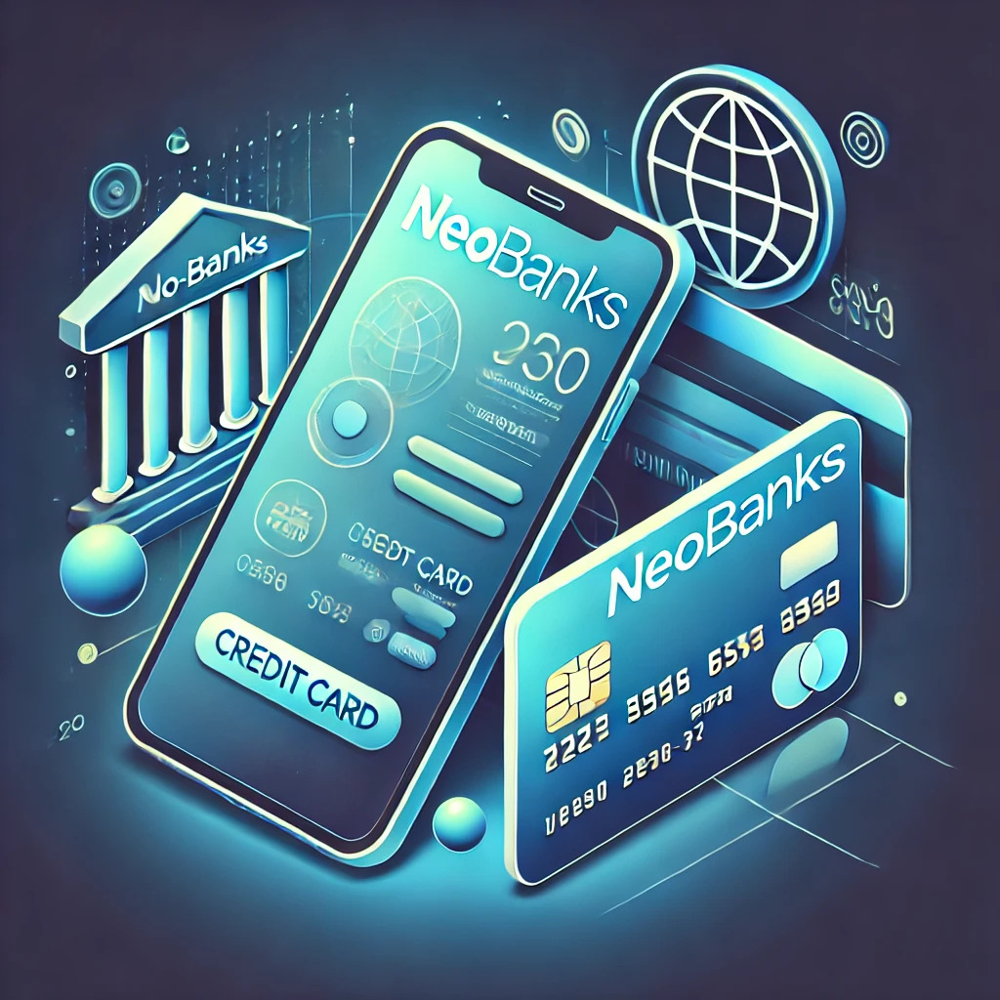

Sustentabilidad Financiera
La sustentabilidad en las finanzas implica prácticas que promueven el desarrollo económico sin comprometer los recursos naturales y sociales para futuras generaciones.
Iniciativas Sustentables en Fintech
- Inversiones verdes
- Préstamos para proyectos sostenibles
- Transparencia en el uso de fondos
- Reducción de la huella de carbono operativa